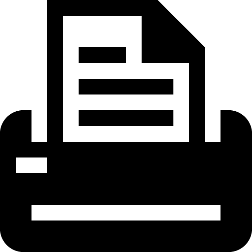
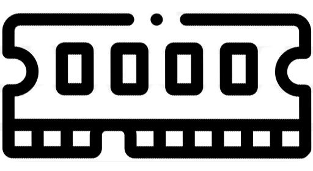
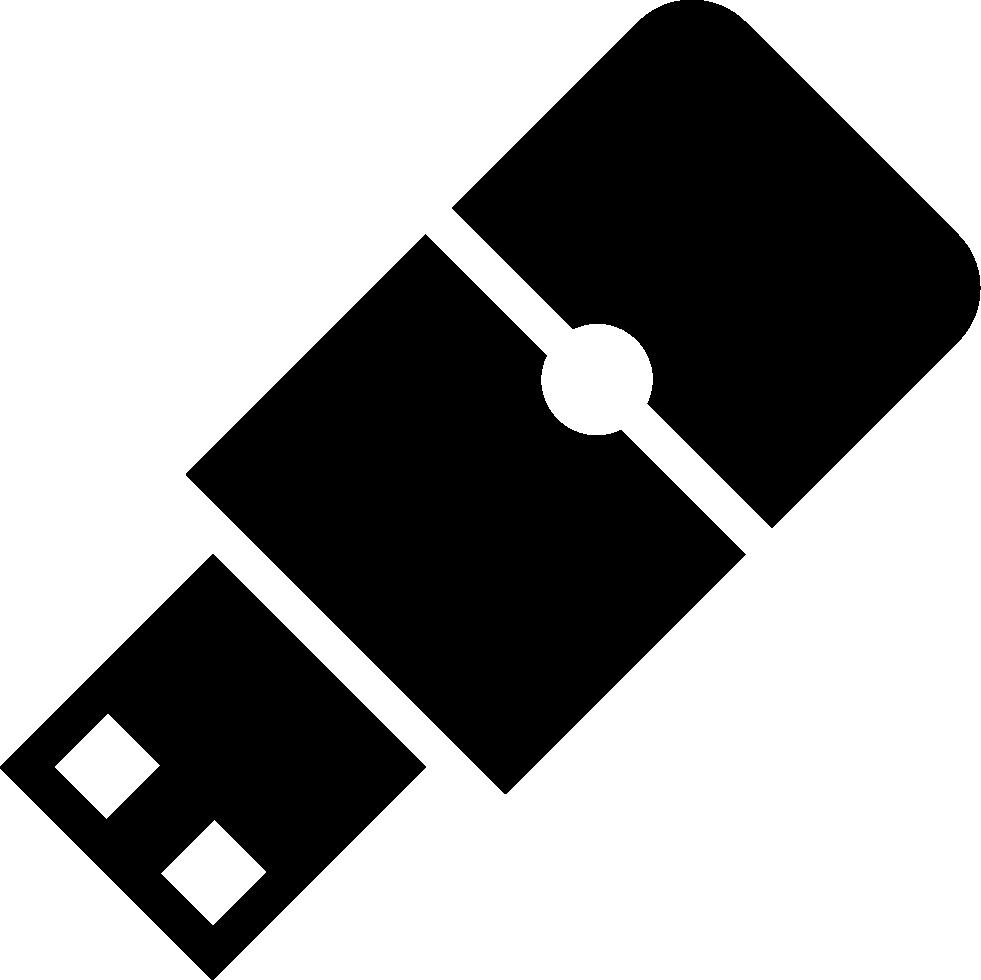
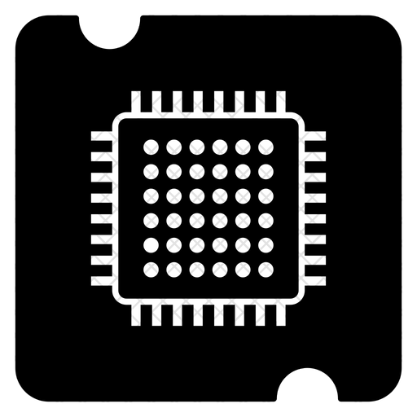

Девайси для комп'ютера
Клавіатура

Клавіатура – пристрій, призначений для уведення в комп'ютер інформації від користувача. Сучасна клавіатура складається зі 104 укріплених у єдиному корпусі клавіш.
Миша

Миша – маніпулятор для введення інформації в комп'ютер. Вона необхідна для роботи із графічними пакетами, кресленнями, при розробці схем і при роботі в нових операційних системах. Найпростіші й дешеві моделі - оптико-механічні. Найдорожчі й надійні моделі «мишок» - оптичні. А найновішими вважаються інфрачервоні бездротові миші.
Монітор

Монітор (дисплей) - пристрій, призначений для виведення на екран текстової й графічної інформації. Від якості монітора залежить збереження зору й загальна стомлюваність при роботі. Монітори мають стандартний розмір діагоналі в 14, 15, 17, 19, 20 й 21 дюймів. Однак у цей час монітори з 14 дюймовим екраном не випускають. Монітори бувають кольоровими й монохромними. Вони можуть працювати в одному із двох режимів: текстовому або графічному.
Принтер
Принтер – пристрій, призначений для виводу текстової й графічної інформації на папір. Розрізняють матричні, струминні й лазерні принтери. Принтери бувають кольорові і чорно-білі.
Сканер
Сканер – пристрій для введення в комп'ютер текстової й графічної інформації. Сканери бувають ручні, настільні й навіть напільні. Ручні сканери дешевше інших, але якість і точність сканування в них дуже мала. Настільні планшетні сканери дозволяють досягати набагато кращого результату, але ціна таких сканерів набагато вища
Характеристика комп'ютера
Процесор
Процесор. Найважливішою характеристикою процесора, що визначає його швидкодію, є його частота, тобто кількість базових операцій (наприклад, операцій додавання двох двійкових чисел), які робить процесор за 1 секунду. За двадцять із невеликим років тактова частота процесора збільшилася в 500 разів, від 4 Мгц (процесор 8086, 1978 р.) до 2 Ггц (процесор Pentium 4, 2001 р.). Іншою характеристикою процесора, що впливає на його продуктивність, є розрядність процесора. Розрядність процесора визначається кількістю двійкових розрядів, які процесор обробляє за один такт. Розрядність процесора збільшилася за 20 років в 8 разів. У першому вітчизняному шкільному комп'ютері «Агат» (1985 р.) був установлений процесор, що мав розрядність 8 біт, у сучасного процесора Pentium 4 розрядність дорівнює 64 біт.
Оперативна пам'ять
Оперативна (внутрішня) пам'ять. Оперативна пам'ять являє собою безліч осередків, причому кожний осередок має свою унікальну двійкову адресу. Кожна комірка пам'яті має обсяг 1 байт. У персональних комп'ютерах величина адресного простору процесора й величина фактично встановленої оперативної пам'яті практично завжди розрізняються. Наприклад, обсяг адресної пам'яті може досягати 4 Гбайт, а величина фактично встановленої оперативної пам'яті буде значно менше -напр., усього 64 Мбайт. Оперативна пам'ять апаратно реалізується у вигляді модулів пам'яті різних типів (SIMM, DIMM) і різного обсягу (від 1 до 256 Мбайт). Модулі розрізняються за своїми геометричними розмірами: застарілі модулі SIMM мають 30 або 72 контакти, а сучасні модулі DIMM - 168 контактів.
Зовнішня пам'ять
Довгострокова (зовнішня) пам'ять. Як зовнішня пам'ять використовуються носії інформації різної інформаційної ємності: гнучкі диски (1,44 Мбайт), жорсткі диски (до 50 Гбайт), оптичні диски CD-ROM (650 Мбайт) і DVD (до 10 Гбайт). Самими повільними з них по швидкості обміну даними є гнучкі диски (0,05 Мбайт/с), а найшвидшими - жорсткі диски (до 100 Мбайт/с).Тут усе просто - чим вища частота процесора, тим він продуктивніший. Частота процесора.
Сокет
Сокет (socket, роз'єм центрального процесора) - це щілинний або гніздовий роз'єм на материнській платі (системній), у який встановлюється процесор. Кожен процесор можна встановити лише на материнську плату з роз'ємом, що має відповідні розміри, необхідну кількість і структуру контактних елементів.
Кожен новий сокет розробляється виробниками процесорів, коли можливості старих роз'ємів вже не можуть забезпечити нормальну роботу нових виробів.
Для процесорів Intel тривалий час використовувався (і зараз ще використовується) сокет LGA775 (процесори Pentium 4, Pentium D, Celeron D, Pentium EE, Core 2 Duo, Core 2 Extreme, Celeron, Xeon серії 3000, Core 2 Quad). З початком виробництва лінійки нових процесорів були введені сокети LGA1366, LGA1156, LGA1155 (процесори i7, i5, i3) та ін.
Роз'єми для процесорів від AMD за останні роки також змінилися - AM2, AM2+, AM3 і так далі. Про більш ранні сокети сенсу згадувати немає, оскільки комп'ютери на їх основі - вже раритет. Хоча, якщо вам цікаво, можете дослідити.
Якщо ви задумали модернізувати старий комп'ютер шляхом придбання продуктивнішого процесора, переконайтеся, що по сокету він підійде до вашої старої материнської плати. Інакше однозначно доведеться замінювати і її.